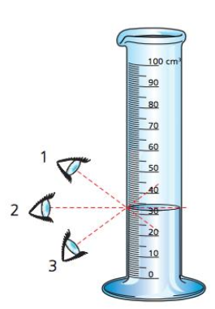
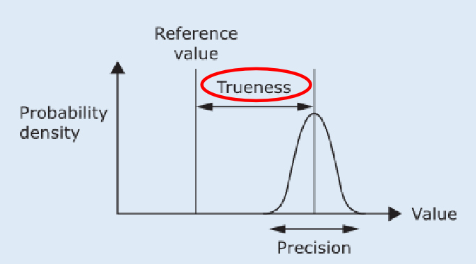

Mechanical Measurements & Instrumentation
اللَّهُمَّ لا سَهْلَ إِلاَّ ما جَعَلْتَهُ سَهْلاً، وأنْتَ تَجْعَلُ الحَزْنَ إِذَا شِئْتَ سَهْلاً.
رَبِّ اشْرَحْ لِي صَدْرِي * وَيَسِّرْ لِي أَمْرِي * وَاحْلُلْ عُقْدَةً مِنْ لِسَانِي * يَفْقَهُوا قَوْلِي.
اللَّهُمَّ انْفَعْنِي بِمَا عَلَّمْتَنِي، وَعَلِّمْنِي مَا يَنْفَعُنِي، وَزِدْنِي عِلْمًا.
اللهم إني أسألك فهم النبيين، وحفظ المرسلين والملائكة المقربين، اللهم اجعل ألسنتنا عامرة بذكرك، وقلوبنا بخشيتك، وأسرارنا بطاعتك، إنك على كل شيء قدير.
يا حي يا قيوم برحمتك أستغيث، أصلح لي شأني كله ولا تكلني إلى نفسي طرفة عين.
اللهم يا جامع الناس ليوم لا ريب فيه، اجمع علي ضالتي.
اللهم إني استودعتك ما قرأت وما حفظت وما تعلمت، فرده عند حاجتي إليه، إنك على كل شيء قدير، وحسبنا الله ونعم الوكيل.
أستغفر الله، أستغفر الله، أستغفر الله.
أي Measurement بنعمله مش بيطلع رقمًا مؤكدًا 100%. لأن فيه دايمًا margin of doubt، فلازم نسأل: المارجن ده كبير قد إيه؟ وعشان كده محتاجين رقمين لتحديد الـ Uncertainty: عرض الـ interval، والـ Confidence Level (قد إيه إحنا متأكدين إن الـ true value جوه المارجن ده).
| Error Type | Affects | الفكرة |
|---|---|---|
| Random Errors | Precision | مرة موجب ومرة سالب، بدون اتجاه ثابت. |
| Systematic (Bias) Errors | Accuracy | انحراف ثابت الاتجاه سببه مشكلة في الـ system. |
| Human Errors | — | أخطاء الشخص نفسه (Mistakes)، مش بتتعالج بالـ averaging. |
Sources of Random Error:
| Cause | الشرح |
|---|---|
| Parallax Error | قياس ارتفاع السائل في أنبوبة مدرجة (0–100 cm³): لازم تكون العين عمودية على التدريج (العين رقم 2 في الشكل = القراءة الصحيحة). لو نظرنا من زاوية مختلفة (العينان 1 و3) تتغير القراءة فتطلع أعلى أو أقل. وعند تكرار القياس مش بالضرورة نبص من نفس الموضع والزاوية كل مرة، فالقراءة مرة تطلع أعلى ومرة أقل، وبالتالي الخطأ عشوائي.  |
| Atmospheric pressure, temperature | الضغط بيتغير مع الزمن ومع المكان، والظروف المحيطة (زي الارتفاع elevation) بتأثر على قراءة الضغط، وكذلك درجة الحرارة؛ فالقراءة بتتذبذب مرة أعلى ومرة أقل. |
| Vibration while measuring | الجهاز موضوع على ترابيزة (table / bench)، وحتى لو كان متركّب ومتوصّل صح فاهتزاز الترابيزة بيأثر على القياس، فالقراءة بتزيد مرة وتقل مرة حسب ظروف الاهتزاز. |
| Definition of the measurand | الـ Measurand هو الكمية المراد قياسها، ولازم تتحدد بوضوح: إيه اللي بنقيسه بالظبط، وبين أنهي نقطتين أو موضعين؟ مثال قياس الارتفاع: ممكن نحصل على قراءة حوالي 30 cm، ولو غيّرنا مكان القياس أو نقاط المرجع تطلع نتيجة مختلفة. فلو تعريف الـ Measurand مش واضح بتختلف نتائج القياس. |
| Loose electric connections | توصيلات كهربائية غير مضبوطة أو فيها عيب بتأثر على القياس وبتسبب اختلاف في القراءات (يظهر spike حاد ثم اضطراب Transients فوق الإشارة السليمة). |
| Excitation voltage of a Wheatstone bridge | تغير مصدر الكهرباء (Power Supply Fluctuations): تشغيل الـ Elevator في المبنى بيعمل اضطراب لحظي في كهرباء المبنى، فالجهاز اللي بيعتمد على المصدر ده بيحصل في قراءته تغير مفاجئ أو spike. لما الدائرة تكون غير متزنة، الخرج V0 بيتناسب مع VEX؛ فأي تغير في VEX بيظهر مباشرة في V0. |
| Noise from electric fields | أنظمة القياس اللي بتعتمد على كميات كهربائية زي الـ Voltage والـ Resistance بتتأثر بالـ noise والـ interference؛ الإشارة الكهربائية اللي بيستخدمها الجهاز بتتأثر، فالقراءة المعروضة بتختلف عن القيمة المتوقعة. |
تخيل إن الجهاز المفروض يقرأ 50 لو مفيش random error. عينة القراءات: 47 – 49 – 50 – 52 – 53. الزيادات والنقصانات بتميل إنها تلغي بعضها عند أخذ الـ average، وكل ما زاد عدد القياسات قل تأثير الـ random error على المتوسط. المتوسط = (47+49+50+52+53)/5 = 50.2 وهو قريب جدًا من القيمة الحقيقية 50.
الرسم: Probability density مقابل Value. ارتفاع المنحنى عند قيمة = تكرار القياسات حولها. العرض (Precision) بيوضح تباعد القراءات.
| ν \ Confidence | 50% | 80% | 90% | 95% | 98% | 99% | 99.9% |
|---|---|---|---|---|---|---|---|
| 19 | t19,50 | t19,80 | t19,90 | t19,95 | t19,98 | t19,99 | t19,99.9 |
Accuracy = قرب القراءات من الـ true value. Precision = قرب القراءات من بعضها. شكل التوزيع يقول لك الـ precision، ومكانه بالنسبة للـ true value يقول لك الـ accuracy. في شكل الحالات الأربع: نقاط متجمعة جدًا بعيد عن المركز = Low accuracy, High precision (وده بيحصل بسبب Systematic Error / Bias).
| الحالة | القراءات |
|---|---|
| High Accuracy + High Precision | قريبة من بعضها ومن الـ true value. |
| High Precision + Low Accuracy | قريبة من بعضها لكن بعيدة عن الـ true value. |
| Low Precision + High Accuracy | منتشرة لكن مركزها قريب من الـ true value. |
| Low Precision + Low Accuracy | منتشرة ومركزها بعيد. |

Examples: Non Linearity · Hysteresis · Sensitivity · Drift · Zero Error · Use an instrument which is improperly calibrated. وأشهرها Drift, Hysteresis, Zero Error.
| Figure (data sheet) | ما يوضحه الرسم |
|---|---|
| (a) Hysteresis error | منحنيان upscale وdownscale بين Input value وOutput value حتى FSO؛ الفرق عند نفس الـ input بين Ydown وYup هو الـ hysteresis. |
| (b) Linearity error | الفرق بين YL (Best linear curve fit) وY (Actual data trend). |
| (c) Sensitivity error | خطوط Ymax وYnom (Nominal curve) والحد الأدنى للجهاز النموذجي؛ ميل الخط K بيختلف. |
| (d) Zero shift (null) error | الخط الاسمي (Nominal) ينزاح لأعلى أو لأسفل (Typical shift high/low) بشكل موازٍ، فتظهر قراءة عند الصفر. |
إزاي نحدد/نقلل الـ Systematic Error:
a) Instrument Uncertainty (UI)
b) Zero-Order Uncertainty (Uo) — بتنتج من الـ Resolution: أصغر تغير يقدر الجهاز يميزه/يعرضه (مثال الـ pressure gauge: 0–100 psi). دي limitation في الجهاز مش غلطة المستخدم.
مثال: جهاز بيعرض 1, 2, 3…: Resolution = 1 فـ Uo = 0.5. وجهاز بيعرض 1, 1.5, 2…: Resolution = 0.5 فـ Uo = 0.25.
Systematic Uncertainty (Us) — Design Stage Uncertainty
الـ uncertainties بتتجمع بطريقة Root Sum Square (تربيع ← جمع ← جذر) وليس جمعًا عاديًا.
أخطاء من الشخص نفسه، المفروض يتأكد منها ويصححها — مش random بنتعامل معاه بالـ averaging:
| Random | Systematic | |
|---|---|---|
| Affects | Precision | Accuracy |
| Reduced by | More experimental trials | Calibration, manufacturer data, reference instrument, different instrument/procedure |
| Uncertainty | Ur (statistics) | Us = √(Uo² + UI²) |